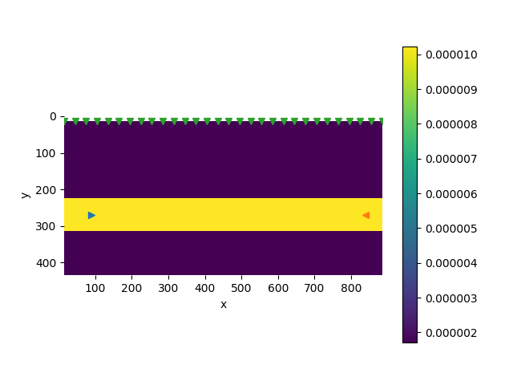

Coupled Geomechanics and Multiphase Flow
This section is dedicated to the inverse problem of Coupled Geomechanics and Multiphase Flow. We only consider the parameter inverse problem here, i.e., estimating the Lamé constants and the viscosity parameter from surface horizontal displacement data. We have tried solving the function inverse problem–-estimating a nonparametric constitutive relation–-using the neural network approach in the single phase flow problem, but unfortunately it appears that the limited displacement data are insufficient to train a neural network.
To this end, we generate the observation data–-$x$-direction displacement on the surface with the following parameters
Linear Elasticity: $E=6\times 10^9\quad \nu=0.35$
Viscoelasticity: $E=6\times 10^9\quad \nu=0.35\quad \eta = 6.667\times 10^{11}$

To test the robustness of the algorithm, we add different levels of noise to the observation data $u_{\mathrm{obs}}$:
where $\sigma = 0, 0.01, 0.05$ and $0.1$, and $w_i$ is a standard normal variable.
Linear Elasticity
We measure the error by $\frac{\|H-H^*\|_2}{\|H^*\|_2}$, where $H$ is the exact elastic tangent matrix. The exact matrix is
The initial guess for the matrix is
We also ensure that the matrix is symmetric positive semidefinite by optimizating $H = DD'$, where $D$ is a free variable of size $3\times 3$.
| Noise Level | $\sigma=0$ | $\sigma=0.01$ | $\sigma=0.05$ | $\sigma=0.1 $ |
|---|---|---|---|---|
| Estimated ($\times 10^9$) | $\left[\begin{array}{ccc}9.6302 & 5.1853 & -0.0001 \\5.1853 & 9.6318 & 0.0001 \\-0.0001 & 0.0001 & 2.2234 \\\end{array}\right]$ | $\left[\begin{array}{ccc}9.6925 & 5.2306 & -0.0201 \\5.2306 & 9.7894 & -0.0037 \\-0.0201 & -0.0037 & 2.3537 \\\end{array}\right]$ | $\left[\begin{array}{ccc}10.409 & 5.0079 & -0.3379 \\5.0079 & 11.1585 & -0.1039 \\-0.3379 & -0.1039 & 3.5966 \\\end{array}\right]$ | $\left[\begin{array}{ccc}10.3964 & 5.0069 & -0.3472 \\5.0069 & 11.9231 & 0.009 \\-0.3472 & 0.009 & 3.9155 \\\end{array}\right]$ |
| Error | $1.6200\times 10^{-4}$ | $1.4554\times 10^{-2}$ | $1.4518\times 10^{-1}$ | $1.9220\times 10^{-1}$ |
| Iterations | 72 | 88 | 81 | 72 |
Viscoelasticity
We report the relative error for each parameter $\mu$, $\lambda$, and $\eta^{-1}$ (for convenience, we use the reciprocal of $\eta$ for numerical simulations). The initial guesses are $10^9$, $10^9$ and $10^{-12}$ respectively. The exact values are
| Noise Level | $\sigma=0$ | $\sigma=0.01$ | $\sigma=0.05$ | $\sigma=0.1$ |
|---|---|---|---|---|
| $\mu$ ($\times 10^9 $) | 2.2222 | 2.2339 | 2.1949 | 2.1711 |
| Error | $2.01\times 10^{-6}$ | $5.25\times 10^{-3}$ | 1.23e-02 | $2.30\times 10^{-2}$ |
| $\lambda$ ($\times 10^9$) | 5.1852 | 5.1729 | 5.222 | 5.2602 |
| Error | $1.32\times 10^{-7}$ | $2.38\times 10^{-3}$ | $7.10\times 10^{-3}$ | $1.45\times 10^{-2}$ |
| $\eta^{-1}$ ($\times 10^{-12}$) | 1.5 | 1.4936 | 1.5154 | 1.5242 |
| Error | $8.02\times 10^{-7}$ | $4.28\times 10^{-3}$ | $1.02\times 10^{-2}$ | $1.61\times 10^{-2}$ |
| Iterations | 29 | 29 | 29 | 30 |
We can see our inversion method is quite accurate and robust.